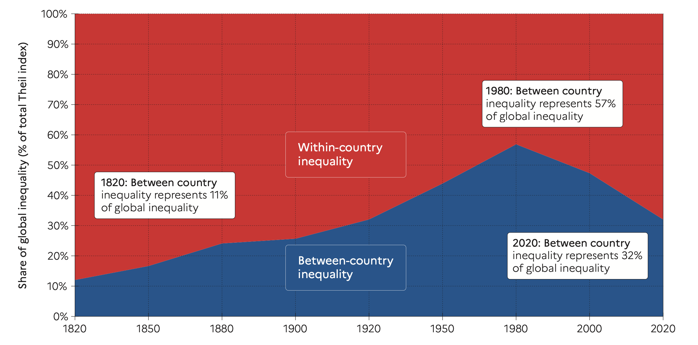

Economic Policy Visualization
Income · Scales
Income inequality in economic policy

- UN SDG 10.1: “By 2030, progressively achieve and sustain income growth of the bottom 40 per cent of the population at a rate higher than the national average.”
- Economists focus on the economic origins and implications of inequality rather than the social and ecological context.
- In neoclassical economics, income inequality arises from differences in marginal productivity and might stimulate economic growth due to differential savings rates, investment, and incentives for effort (Josifidis/Supic, 2018).
- In (Post-)Keynesian economics, income inequality is the result of institutional settings, power relations, etc. Inequality harms economic growth in most of these models due to detrimental effects on aggregate demand (Kurz/Salvadori, 2010).
Functional distribution
Income accounts in the System of National Accounts show primary (from production) and secondary (from redistribution) income flows. It is also the base for functional distribution:
Gross domestic product (GDP) at market prices
\(+\) Primary incomes receivable from the rest of world
\(-\) Primary incomes payable to the rest of world
\(=\) Gross national income (GNI) at market prices
\(-\) Consumption of fixed capital
\(=\) Net national income at market prices
\(-\) Taxes on products
\(+\) Subsidies on products
\(=\) Net national income at factor cost
← Rest of World
← Depreciation
← Government
← Production factors
Income accounts for Austria, 2021
── Attaching core tidyverse packages ──────────────────────── tidyverse 2.0.0 ──
✔ dplyr 1.1.2 ✔ readr 2.1.4
✔ forcats 1.0.0 ✔ stringr 1.5.0
✔ ggplot2 3.4.3 ✔ tibble 3.2.1
✔ lubridate 1.9.2 ✔ tidyr 1.3.0
✔ purrr 1.0.2
── Conflicts ────────────────────────────────────────── tidyverse_conflicts() ──
✖ dplyr::filter() masks stats::filter()
✖ dplyr::lag() masks stats::lag()
ℹ Use the conflicted package (<http://conflicted.r-lib.org/>) to force all conflicts to become errors
Links is a tbl_df. Converting to a plain data frame.Wage share = Compensation of Employees / Net national income at factor cost
Functional income distribution in Continental Europe
Functional distribution in Anglosaxon countries
Historical development of global personal inequality: 3 views


Global inequality 1820-2020

Source: Chancel et al. (2022)
Decomposition of global inequality

Source: Chancel et al. (2022)
Disposable net income in Europe
The legacy packages maptools, rgdal, and rgeos, underpinning the sp package,
which was just loaded, will retire in October 2023.
Please refer to R-spatial evolution reports for details, especially
https://r-spatial.org/r/2023/05/15/evolution4.html.
It may be desirable to make the sf package available;
package maintainers should consider adding sf to Suggests:.
The sp package is now running under evolution status 2
(status 2 uses the sf package in place of rgdal)Support for Spatial objects (`sp`) will be deprecated in {rnaturalearth} and will be removed in a future release of the package. Please use `sf` objects with {rnaturalearth}. For example: `ne_download(returnclass = 'sf')`
Attache Paket: 'rnaturalearthdata'Das folgende Objekt ist maskiert 'package:rnaturalearth':
countries110Linking to GEOS 3.11.0, GDAL 3.5.3, PROJ 9.1.0; sf_use_s2() is TRUEJoining with `by = join_by(geo)`Scales

Axes
Continuous
Dates
ggplot(aes(x = year, y = poverty_rate)) +
geom_line() +
scale_x_date(limits = c(as.Date("2020-01-01"), as.Date("2024-01-01")),
breaks = date_breaks = "2 years",
labels = date_labels = "%Y")Others
scale_x_log10(), scale_x_reverse(), scale_x_sqrt(), …
Colors
Manual
ggplot(aes(x = year, y = poverty_rate, color = country)) +
geom_line() +
scale_color_manual(values = c("red", "blue", "green"))Gradient
ggplot(aes(x = gdp, y = life_expectancy, color = poverty_rate)) +
geom_point() +
scale_color_gradient(low = "green", high = "red", na.value = "gray80")Brewer
ggplot(aes(x = year, y = poverty_rate, fill = country)) +
geom_area() +
scale_fill_brewer(palette = "Set1")Others
scale_color_binned(), scale_color_distiller(), scale_color_grey(), …
Shape, size and alpha
tribble(~x, ~y, ~significance, ~gdp, ~continent,
0.5, 0.5, "yes", 140, "Asia",
1.0, 0.5, "yes", 100, "Africa",
1.5, 0.5, "no", 250, "Europe") |>
ggplot(aes(x = x, y = y)) +
geom_point(aes(alpha = significance, size = gdp, shape = continent)) +
scale_alpha_discrete(range = c(0.5, 1), guide = guide_none()) +
scale_size_continuous(range = c(5, 12), guide = guide_none()) +
scale_shape_manual(values = c(17, 19, 15),
guide = guide_legend(title = "Continent",
override.aes = list(size = 5))) +
theme_minimal()Warning: Using alpha for a discrete variable is not advised.Guides
ggplot(aes(x = life_expectancy, y = poverty_rate, color = continent)) +
geom_point() +
scale_color_viridis_d(guide = guide_legend(title.position = "top",
title.theme = element_text(size = 2),
title.hjust = 0, title.vjust = 0.5,
label.position = "bottom",
label.hjust = 0, label.vjust = 0.5,
keywidth = 2, keyheight = 2,
direction = "horizontal",
override.aes = list(size = 4),
nrow = 1, ncol = 4,
byrow = FALSE, reverse = FALSE, ...))| Scale type | Default guide type |
|---|---|
| continuous scales for colour/fill aesthetics | colourbar |
| binned scales for colour/fill aesthetics | coloursteps |
| position scales (continuous, binned and discrete) | axis |
| discrete scales (except position scales) | legend |
| binned scales (except position/colour/fill scales) | bins |
Bibliography
References
Chancel, Lucas/Piketty, Thomas/Saez, Emmanuel/Zucman, Gabriel (2022). World inequality report 2022. World Inequality Lab.
Josifidis, Kosta/Supic, Novica (2018). Institutionalist versus neoclassical view on income distribution and economic progress: The OECD panel evidence. Panoeconomicus, 65(3), 319–337. DOI: 10.2298/pan1803319j
Kurz, Heinz D./Salvadori, Neri (2010). The post-keynesian theories of growth and distribution: A survey. In Setterfield, Mark (Ed.), Handbook of alternative theories of economic growth. Edward Elgar Publishing. DOI: 10.4337/9781849805582.00010
Stockhammer, Engelbert (2015). Determinants of the wage share: A panel analysis of advanced and developing economies. British Journal of Industrial Relations, 55(1), 3–33. DOI: 10.1111/bjir.12165